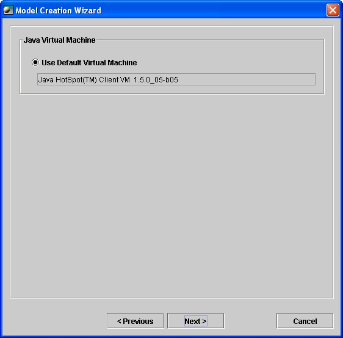
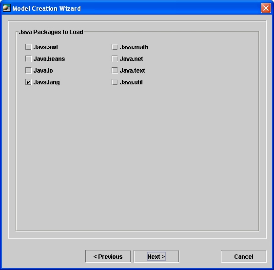

Invocation
When Open ModelSphere is launched, the Model Creation Wizard is automatically invoked. You can disable the automatic invocation by checking out the Show at startup checkbox at the first page of the wizard (see the image below). Once the application is running, it is always possible to invoke the Model Creation Wizard by accessing the File->New->Model.. menu.
At the first page of the wizard, the user is asked to open a
previously
opened file, or create a model by selecting among the following choices
: Data Model, Business Process Model and UML Model, and press the
Next
> button.
Data modeling
Once data modeling is selected, users have to decide if they want to create a conceptual, logical or physical data model. Conceptual data models represent the business user's point of view. Logical data models are (database-neutral) relational representations while physical data models are associated with a target system (Oracle, Informix, DB2 and several other ones).
Once the data model is associated to a selected notation, you can start modeling.

Business Process modeling
If business process modeling is selected, you have to select which notation will be used for process modeling. Although it is possible to select behavioral UML diagrams after selecting Business Process Modeling, it is recommended for users interested in UML diagrams to select UML Model at the first page of the wizard.

UML modeling
If UML modeling is selected, you have to select one of the nine supported UML diagrams. Class Diagram is the most used diagram and thus the one selected by default. Having selected, just press Next > and you are ready to start modeling.

The Open-ModelSphere class diagram supports only one target system, the Java language. In a future release of ModelSphere, it will be possible to associate a class diagram with a specific version of Java (Java 1.2, 1.3, 1.4, etc.), but for now the only version of Java allowed is the one used to run the application.
Therefore, if you select class or package diagram and press Next
>,
the next page just displays the Java version currently used by the
application. Press Next
>
again.

The Java built-in types (int, boolean, long, char, etc.) can be used in a class diagram, but some library classes are also required, such as java.lang.String or java.util.Date. For the supported Java version, it is possible to import all the library classes from one or several Java packages. By default, only classes coming from the java.lang package will be imported. The number of classes imported depends on the number of classes defined by the given Java version (the most-recent version of Java will probably define a higher number of classes).

It is important to notice that a Java class in a given package often
refers to a class in another package. For instance, the
java.lang.String
inherits from
java.io.Serializable. When a class is
imported,
all the classes required to define the imported class are also imported
in turn. It's why if you select the java.lang package, all the
classes
contained in java.lang will be imported, but also classes required to
define
java.lang classes, such as java.io.Serializable.
Stopping the Wizard
At any step of the wizard, some objects are created and
appear in
the
explorer. If you stop the wizard, objects
created by the wizard will be deleted.